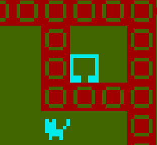
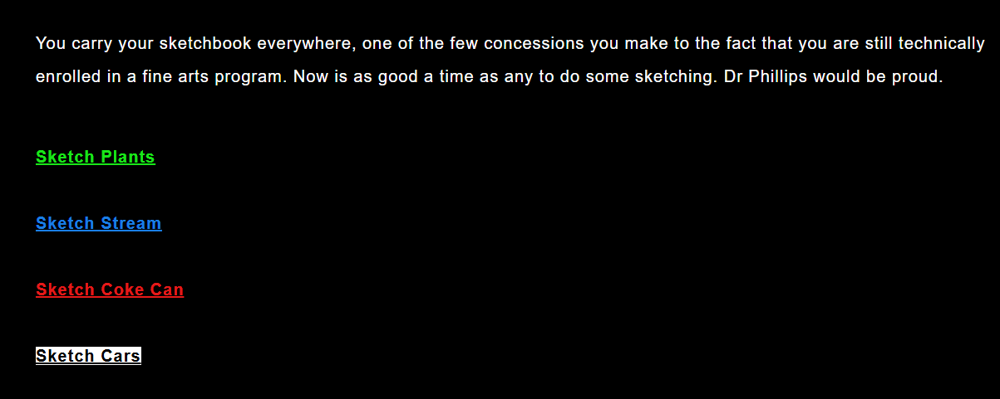

Elizabeth Bantas is a prime example of subject-formation who writes from the suburbs of Melbourne. She has historically been quite cagey about her pronouns, but don’t let that bother you. She likes to write about her experiences growing up in the undermythologised portions of Australia, and she often deploys what has been euphemistically described as humour. She is the recipient of the Booker Prize (pending), the Premier’s Award for Best Short Fiction (pending) and the Victoria Cross (lost in transit), although her proudest achievement is the five kudos she received as the author of a Fefkat(?) crackfic(?).

Journey to the mysterious other world in the latest game by Elizabeth Bantas, STARHELL

Explore a new story set in Melbourne's suburbs as night begins to fall. Linger Out, available here.